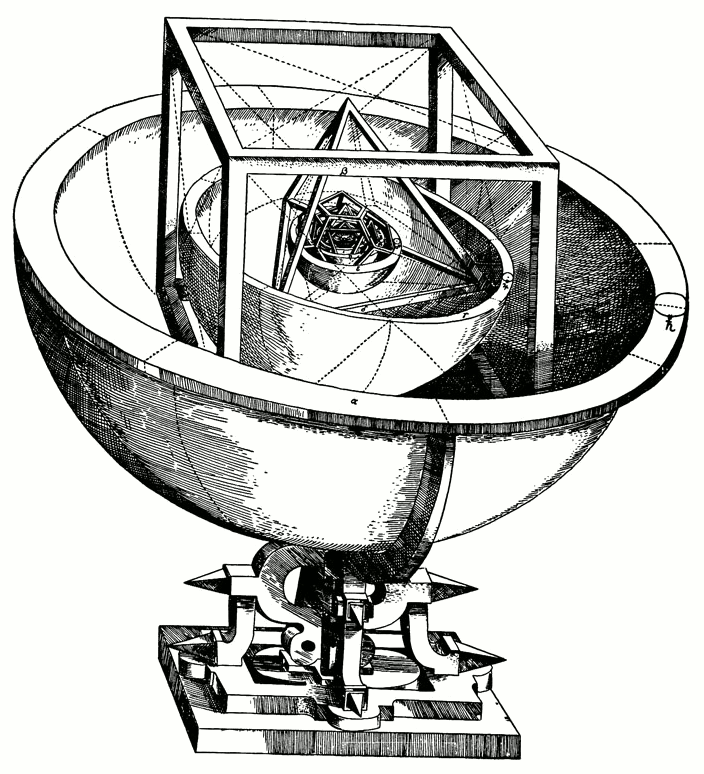

Euclidean geometry is the oldest deductive science and, for two thousand years, it was the model of what a mathematical theory should be. Yet the subject that most students meet — angle chasing, congruent triangles, the Pythagorean theorem, the inscribed angle theorem — is only its surface. Beneath it lie questions that occupied Gauss, Hilbert, Klein and Dehn: What exactly are the axioms, and are they consistent and independent? What is a "motion" of the plane, and how are all motions classified? Which figures can be cut into finitely many pieces and reassembled into one another? Which lengths can be produced with a straightedge and compass, and why can an angle of 60° not be trisected?
This course treats Euclidean geometry the way a graduate text would. We begin with Hilbert's axiom system of 1899 and its models, so that every later argument rests on a precise foundation. We then adopt Felix Klein's point of view from the Erlangen Program (1872): a geometry is the study of the invariants of a group of transformations. For Euclidean geometry that group is the isometry group E(2) = ℝ² ⋊ O(2), and we classify its elements and its discrete subgroups, including the crystallographic restriction and the frieze and wallpaper groups.
The middle of the course is classical triangle and circle geometry done with full proofs: the Euler line, the nine-point circle, Euler's relation OI² = R² − 2Rr, the theorems of Ceva and Menelaus in their signed form, Routh's theorem, power of a point, radical axes and inversion, with applications such as Ptolemy's inequality and Feuerbach's theorem. We then step outside the Euclidean plane into the real projective plane, where the cross-ratio becomes the fundamental invariant and the theorems of Desargues and Pappus acquire an algebraic meaning: they characterise when a projective plane can be coordinatised by a division ring or by a field.
The final part turns to solid geometry and to the algebra hiding inside geometric questions: the Euler characteristic V − E + F, the classification of the regular polytopes in every dimension, the Bolyai–Gerwien theorem on dissections of polygons, Dehn's solution of Hilbert's third problem, and the field-theoretic theory of straightedge-and-compass constructions culminating in the Gauss–Wantzel theorem.
In this course, you will:
- 1.Read and use Hilbert's axioms for Euclidean geometry and understand its models and independence results
- 2.Prove that every isometry of ℝ² is affine and classify all plane isometries
- 3.Classify the finite symmetry groups of the plane and prove the crystallographic restriction
- 4.Prove the Euler line, nine-point circle and Euler's inequality R ≥ 2r with exact computations
- 5.Use signed ratios to prove Ceva, Menelaus and Routh's theorem
- 6.Master power of a point, radical axes and inversion, and use inversion to prove classical theorems
- 7.Work in the real projective plane with homogeneous coordinates, duality and cross-ratio
- 8.Understand the theorems of Desargues and Pappus and their algebraic significance
- 9.Prove Euler's formula V − E + F = 2 and Descartes' theorem on angular defect
- 10.Classify the Platonic solids and the regular polytopes in all dimensions
- 11.Prove the Bolyai–Gerwien theorem and solve Hilbert's third problem with the Dehn invariant
- 12.Determine exactly which numbers and regular polygons are constructible with straightedge and compass
Prerequisites are a solid command of high-school geometry and trigonometry, linear algebra (matrices, determinants, orthogonal matrices), and elementary group theory and field theory (subgroups, cosets, field extensions and their degrees). Proofs are given in full unless explicitly labelled as sketches. Each lesson ends with exercises; their solutions follow immediately and should be consulted only after a serious attempt.
Figures


Contents
Hilbert's Axioms and the Foundations of Geometry Lesson 2
Isometries of the Euclidean Plane Lesson 3
Classification of Plane Isometries Lesson 4
Symmetry Groups, Lattices and the Crystallographic Restriction Lesson 5
Triangle Centres, the Euler Line and the Nine-Point Circle Lesson 6
Ceva, Menelaus and Routh Lesson 7
Power of a Point, Radical Axes and Inversion Lesson 8
Projective Geometry, Cross-Ratio, Desargues and Pappus Lesson 9
The Euler Characteristic and Angular Defect Lesson 10
Regular Polytopes and the Platonic Solids Lesson 11
Dissections, Bolyai–Gerwien and Hilbert's Third Problem Lesson 12
Constructibility with Straightedge and Compass Problem Set
60 problems Assessment
Randomly generated questions
Image sources
- Figure 1 · Hilbert. By Unknown author. Public domain. From Wikimedia Commons: https://commons.wikimedia.org/wiki/File:Hilbert.jpg
- Figure 2 · Kepler-solar-system-1. By Johannes Kepler. Public domain. From Wikimedia Commons: https://commons.wikimedia.org/wiki/File:Kepler-solar-system-1.png